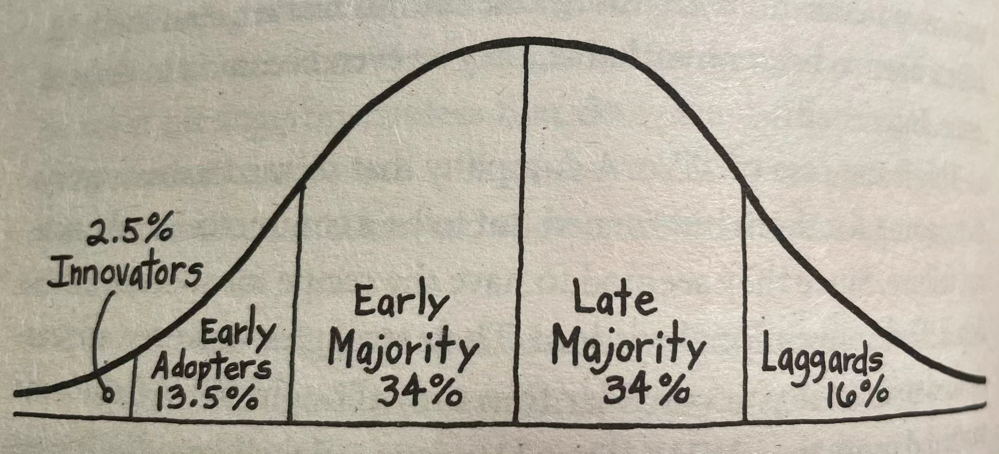
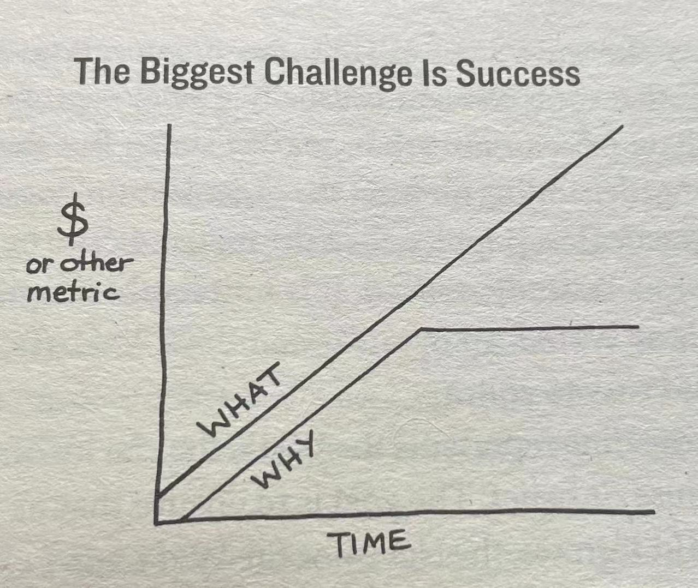

Introduction: Why Start with Why?
6 Great leaders, in contrast, are able to inspire people to act. Those who are able to inspire give people a sense of purpose or belonging that has little to do with any external incentive or benefit to be gained.Those who truly lead are able to create a following of people who act not because they were swayed, but because they were inspired. For those who are inspired, the motivation to act is deeply personal. They are less likely to be swayed by incentives. Those who are inspired are willing to pay a premium or endure inconvenience, even personal suffering. Those who are able to inspire will create a following of people -- supporters, voters, customers, workers -- who act for the good of the whole not because they have to, but because they want to .
7 This book is not designed to tell you what to do or how to do it. Its goal is not to give you a course of action. Its goal is to offer you the cause of action.
Part 1: A World that doesn't start with why
1. Assume You Know
11 We make assumptions about the world around us based on sometimes incomplete or false information.
. This is important because our behaviour is affected by our assumptions of our perceived (被察觉的) truths. We make decisions based on what we think we know.
. This perceived truth impacted behavior. During this period, there was very little exploration. People feared that if they traveled too far they might fall off the edge of the earth.
12 The correction of a simple false assumption moved the human race forward.
. Regardless of the process or the goals, we all want to make educated (明智的) decisions. More importantly, we all want to make right decisions.
. Whatever the result, we make decisions based on a perception of the world that may not, in fact, be completely accurate.
13 Not only bad decisions are made on false assumptions. Sometimes when things go right , we think we know why , but do we really ? That the result went the way you want does not mean you can repeat it over and over.
. The problem is, we've all been in situations in which we have all the data and get lots of good advice but things still don't go quite right.
. You have to be careful what you think you know. Assumptions, you see, even when based on sound research, can lead us astray (误入歧途) .
. We understand that even with mountains of data and good advice, if things don't go as expected, it's probably because we missed one, sometimes small but vital (必不可少的) detail.
. There are other factors that must be considered, factors that exist outside of our rational, analytical, information hungry brains.
14 The dance between gut and rational decision-making pretty much covers how we conduct business and even live our lives.
. In the Japanese auto plant, they didn't examine the problem and accumulate data to figure out the best solution -- they engineered the outcome they wanted from the beginning. If they didn't achieve their desired outcome, they understood it was because of a decision they made at the start of the process.
. When faced with a result that doesn't go according to a plan, a series of perfectly effective short-term tactics are used until the desired outcome is achieved.
15 Even though the outcome may look the same, great leaders understand the value in the things we cannot see.
Every instruction we give, every course of action we set, every result we desire, start with the same thing: a decision.
. Though both of courses of action may yield similar short-term results, it is what we can't see that makes long-term success more predictable for only one. The one that understood why the doors need to fit by design and not by default.
2. Carrots and Sticks
Manipulation vs. Inspiration
16 The reality is, most businesses today are making decisions based on a set of incomplete or, or worse, completely flawed assumptions about what's driving their business.
17 There are only two ways to influence human behavior: you can manipulate it or you can inspire it.
. From business to politics, manipulations run rampant in all forms of sales and marketing. Typical manipulations include: dropping the price; running a promotion; using fear, peer pressure or aspirational message; and promising innovation to influence behavior -- be it a purchase, a vote or support. When companies or organizations do not have a clear sense of why their customers are there customers, they tend to rely on a disproportionate (不成比例的) number of manipulations to get what they need. And for good reason. Manipulations work.
Price
. Many companies are reluctant (不情愿地) to play the price game, but they do so because they know it is effective. So effective, in fact, that the temptation can sometimes be overwhelming.
. No matter how they rationalized it to themselves or their clients, price is highly effective manipulation.
. Playing the price game, however, can come at tremendous cost and create a significant dilemma for the company. For the seller, selling based on price is like heroin. The short-term gain is fantastic, but the more you do it, the harder it becomes to the habit.
. Price always costs something. The question is, how much are you willing to pay for the money you make?
Fear
21 When fear is employed, facts are incidental. Deeply seated in our biological drive to survive, that emotion cannot be quickly wiped away with facts and figures. This is how terrorism works. It's not the statistical probability that one could get hurt by a terrorist, but it's fear that it might happen that cripples a population.
A powerful manipulator, fear is often used with far less nefarious (邪恶的) motivations. We use fear to raise our kids. We use fear to motivate people to obey a code of ethics.
Aspirations
22 If fear motivates us to move away from something horrible, aspirational message tempt us toward something desirable.
. Though positive in nature, aspirational message are most effective with those who lack discipline or have a nagging (唠叨) fear or insecurity that they don't have the ability to achieve their dreams on their own (which ,at various times for various reasons, is everyone.) I always joke that you can get someone to buy a gym membership with an aspirational message, but to get them to go three days a week requires a bit of inspiration. Someone who lives a healthy lifestyle and is in a habit of exercising does not respond to "six easy steps to losing weight." It's those who don't have the lifestyle that are most susceptible (易受影响的).
. Aspirational message can spur (刺激) behavior, but for most, it won't last.
. This short-term response to long-term desires is alive and well in the corporate world also. A management consultant friend of mine was hired by a billion-dollar company to help it fulfill it's goals and aspirations. The problem was, she explained, no matter the issue, the company's managers were always drawn to the quicker, cheaper option over the better long-term solution . Just like the habitual dieter, "they never have the time or money to do it right the first time," she said of her client, "but they always have the time and money to do it again ."
Peer Pressure
25 The practice is designed to do one thing and one thing only -- to pressure you to buy. To make you feel you might be missing out on something or that everyone else knows but you. Better to go with the majority, right?
To quote my mother, "If your friends put their head in the oven, would you do that too?" Sadly, if Michael Jordan or Tiger Woods was paid to do just that, it might actually start a trend.
Novelty (a.k.a Innovation)
26 Like so many before it, the company confused innovation with novelty.
Real innovation changes the course of industries or even society. The light bulb, the microwave oven, the fax machine, iTunes. These are true innovations that changed how we conduct business , altered how we live our lives, and, in the case of iTunes, challenged an industry to completely reevaluate its business model. Adding a camera to a mobile phone, for example, is not an innovation -- a great feature, for sure, but not industry-altering.
. Motorola had successfully designed the latest shiny object for people to get excited about ... at least until a new shiny object came out. And that's the reason these features are more a novelty than an innovation. They are added in an attempt to differentiate, but not reinvent . It's not a bad thing, but it can't be counted on to add any long-term value . Novelty can drive sales -- the RAZR proved it -- but the impact does not last. If a company adds too many novel ideas too often, it can have a similar impact on the product or category as the price game.
27 So much so that even Colgate offers a link on their Web site called "Need Help Deciding?" If Colgate needs to help us pick one of their products because there are too many variations, how are we supposed to decide when we go to the supermarket without their Web site to help us?
Once again, this is an example of the newest set of shiny objects designed to encourage a trail or a purchase. What companies cleverly disguise (伪装) as "innovation" is in fact novelty. And it's not only packaged goods that rely on novelty to lure customers; it's a common practice in other industries, too. It works, but rarely if ever does the strategy cement (粘牢) any loyal relationship .
. Apple is not only leading how mobile phones are designed, but, in typical Apple fashion, also how the industry functions . In the mobile phone industry, it is the service provider , not the phone manufacture, that determines all the feature and benefits the phone can offer. T-Mobile, Verizon Wireless, Sprint, AT&T all dictate to Motorola, Nokia, Ericsson, LG and others what the phones will do. Then Apple showed up. They announced that they would tell the service provider what the phone would do, not the other way around. AT&T was the only one that agreed, thus earning the company the exclusive deal to offer the new technology. That's the kind of shift that will impact the industry for many years and will extend far beyond a few years of stock boost for the shiny new product.
Novel, huh？
The Price You Pay for the Money You Make
28 I cannot dispute that manipulations work. Every one of them can indeed help influence behavior and every one of them can help a company become quite successful. But there are trade-offs. Not a single one of them breeds loyalty. Over the course of time, they cost more and more. They gains are only short-term.
.
Beyond the business world, manipulations are the norm in politics today as well. Just as manipulations can drive a sale but not create loyalty , so too can they help a candidate get elected, but they don't create a foundation for leadership . Leadership requires people to stick with you through thick and thin. Leadership is the ability to rally on people not for a single event, but for years. In business, leadership means that customers will continue to support your company even when you slip up. If manipulation is the only strategy, what happens the next time a purchase decision is required?
. There is a big difference between business and loyalty. Repeat business is when people do business with you multiple times. Loyalty is when people are willing to turn down a better product or a better price to continue doing business with you. Loyal customers often don't even bother to research the competition or entertain other options. Loyalty is not easily won. Repeat business, however, is. All it takes is more manipulations.
29 The short-term tactics have become so sophisticated that an entire economy has developed to service the manipulations, equipped with statistics and quasi-science (准科学).
. To make them profitable, manufacturers rely on the breakage and slippage numbers staying above a certain threshold. Just like our trusty drug addict, whose behavior is reinforced by how good the short-term high feels, the temptation to make the qualifications of the rebate more obscure (朦胧) or cumbersome (繁琐) so as to reduce the number of qualified applicants can be overwhelming for some.
Manipulations Lead to Transactions, Not Loyalty
31 Given that most people to be any head-to-head comparisons made to the other services. All they needed to do was drive a purchase decision and offer a pleasant enough experience that people would recommend it to a friend. Any more was unnecessary.
. Manipulations are a perfectly valid strategy for driving a transaction, or for any behavior that is only required once or on rare occasions.
. In any circumstance in which a person or organization wants more than a single transaction , however, if there is a hope for a loyal, lasting relationship, manipulations do not help .
32 Though loyal customers are less tempted by other offers and incentives, in good times the free flow of business makes it hard to recognize them value. It's in the tough times that loyal customers matter most.
Manipulations work, but they cost money. Lots of money. When the money is not as available to fund those tactics, not having a loyal following really hurts.
. Knowing you have a loyal customer and employee base not only reduce costs, it provides massive peace of mind . Like loyal friends, you know your customers and employees will be there for you when you need them most. It is the feeling of "we're in this together," shared between customer and company, voter and candidate, boss and employee, that defines great leaders.
In contrast, relying on manipulations creates massive stress for buyer and seller alike.
33 All the advertising, promotions and pressure employed to temp us one way or another, each attempting to push harder than the other to court (追求) us for our money or support, ultimately yields one consistent result: stress.
. The short-term gains that drive business in America today are actually destroying our health.
Just Because It Works Doesn't Make It Right
34 The fact that alone creates a systemic peer pressure . With perfect irony (讽刺), we, the manipulators, have been manipulated by our own system. With every price drop, promotion, fear-based or aspirational message, and novelty we use to achieve our goals, we find our companies, our organizations and our systems getting weaker and weaker.
Part 2: An alternative perspective
3. The Golden Cycle
There are a few leaders who choose to inspire rather than manipulate in order to motivate people. Whether individuals or organizations, every single one of these inspiring leader thinks, acts, and communicates exactly the same way. And it's the complete opposite of the rest of us. Consciously or not, how they do it is by following a naturally occurring pattern that I call the Golden Cycle.
39
WHAT : Every single company and organization on the planet know WHAT they do. This is true no matter how big or small, no matter what industry. Everyone is easily able to describe the products or services a company sells or the job function they have within that system. WHATs are easily to identify.
HOW : Some companies and people know HOW they do WHAT they do. Whether you call them a "differentiating value proposition (主张)", "proprietary process" or "unique selling proposition," HOWs are often given to explain how something is different or better. Not as obvious as WHATs, many think these are the differentiating or motivating factors in a decision. It would be false to assume that's all is required. There is one missing detail:
WHY : Very few people or companies can clearly articulate WHY they do WHAT they do. When I say WHY, I don't mean to make money -- that's a result. By WHY I mean what is your purpose, cause or belief ? WHY does your company exist? WHY do you get out of bed every morning? And WHY should anyone care?
41 This time, the example starts with WHY.
Everything we do, we believe in challenging the status quo (现状). We believe in thinking differently.
The we challenge the status quo is by making our products beautifully designed, simple to use and user-friendly.
And we happen to make great computers.
Wanna buy one?
. There's no trickery, no manipulation, no free stuff, no aspirational message, no celebrities.
. The example starts to prove that people don't buy WHAT you do, they buy WHY you do it.
It's worth repeating: people don't buy WHAT you do, they buy WHY you do it.
42 When communicating from the inside out, however, the WHY is offered as the reason to buy and the WHATs serve as the tangible proof of that belief. The things we can point to rationalize or explain the reasons we're drawn to one product, company or idea over another.
WHAT companies do are external factors, but WHY they do it is something deeper.
43 Everything they do works to demonstrate their WHY , to challenge the status quo. Regardless of the products they make or industry in which they operate, it is always clear that Apple "thinks different."
45 The same cannot be said for companies with a fuzzy sense of WHY. When an organization defines itself by WHAT it does, that's all it will ever be able to do.
. The problem was they had defined themselves by WHAT they did; they made computers, and it simply didn't make sense to us to buy a PDA or mp3 player from them. It didn't feel right .
. Apple, unlike its competitors, has defined by WHY it does things, not WHAT it does. It is not a computer company, but a company that challenges the status quo and offers individuals simpler alternatives . Apple even changed its legal name in 2007 from Apple Computer, Inc. to Apple Inc. to reflect the fact that they were more than just a computer company. Practically speaking , it doesn't really matter what a company's legal name is. For Apple, however, having the world "Computer" in their name didn't limit WHAT they could do. It limited how they thought of themselves. The change wasn't practical , it was philosophical .
46 Apple's WHY was formed at its founding in the late 1970s and hasn't changed to this date. Regardless of the products they make or the industries into which they migrate, their WHY still remains a constant. And Apple's intention to challenge accepted thinking has proved prophetic (预言的).
47 This is largely the pattern for almost every other product or service on the market today, business-to-customer or business-to-business. They focus on WHAT they do and HOW they do it without consideration of WHY; we lump them together and they act like commodities.
. Companies and organization with a clear sense of WHY never worry about it. They don't "convince" anyone of their value. They don't need complex systems of carrots and sticks. They are different, and everyone knows it. They start with WHY in everything they say and they do .
48 The products they choose become proof of WHY they do the things they do.
. Like the products the company produces that serve as proof of the company's WHY, so too does a brand or product serve as proof of an individual's WHY .
. But a company doesn't need to have the best products, they just need to be good or very good. Better or best is a relative comparison. Without first understanding WHY , the comparison itself is of no value to the decision maker .
The concept of "better" begs the question: based on what standard?
49 Even with objective metrics in hand, the argument about which is better or which is worse without first establishing a common standard creates nothing more than debate .
. It's not a debate about better or worse anymore, it's a discussion about different needs. And before the discussion can even happen, the WHYs for each must be established first .
A simple claim of better, even with the rational evidence to back it up, can create desire and even motivate a decision to buy, but it doesn't create loyalty. If a customer feels inspired to buy a product, rather than manipulated, they will be able to verbalize the reasons why they think what they bought is better. Good quality and features matter, but they are not enough to produce the dogged loyalty that all the inspiring leaders and companies are able to command. It is the cause that is represented by the company, brand, product or person that inspires loyalty.
Not the Only Way, Just One Way
50 Knowing your WHY is not the only way to be successful, but it is the only way to maintain a lasting success and have a greater blend (混合) of innovation and flexibility. When a WHY goes fuzzy, it becomes much more difficult to maintain the growth, loyalty and inspiration that helped drive the original success . Buy difficult , I mean that manipulation rather than inspiration fast becomes the strategy of choice to motivate behavior. This is effective in the short term but comes at a high cost in the long term.
51 In all cases, going back to the original purpose, cause or belief will help these industries adapt. Instead of asking, "WHAT should we do to complete?" the question must be asked, "WHY did we starting doing WHAT we're doing in the first place, and WHAT can we do to bring our cause to life considering all the technologies and market opportunities available today?" But don't take my word for it. Non of this is my opinion. It is all firmly grounded in the tenets (原理,信条) of biology.
4. This Is Not Opinion, This Is Biology
53 Our need to belong is not rational, but it is a constant that exists across all people in all cultures. It is a feeling we get when those around us share our values and beliefs . When we feel like we belong we feel connected and we feel safe. As human we crave (渴望) the feeling and we seek it out.
Sometimes our feeling of belonging is incidental.
. We're not friends with everyone from our home state, but travel across the country, and you'll feel a special bond with someone you meet who is from your home state.
. No matter we where we go, we trust those with whom we are able to perceive (感知) common value or beliefs.
Our desire to feel like we belong is so powerful that we will go to great length, do irrational things and often spend money to get that feeling.
54 This is not because they are better, but because they become makers or symbols of the values and beliefs we hold dear (珍视).
. Our nature need to belong also makes us good at spotting things that don't belong. It's sense we get. A feeling . Something deep inside us, something we can't put into words, allows us to feel how somethings just fit and some things just don't.
. Apple defines itself as a company on a mission and so anything they do that fits that definition feels like it belongs.
55 One is better or worse; it depends on where you feel like you belong. Are you a rabble-rouser or are you with the majority?
We are drawn to leaders and organizations that are good at communicating what they believe . There ability to make us feel like we belong, to make us feel special , safe and not alone is part of what gives them the ability to draw us close and to command our loyalty . And we feel a strong bond with those who are also drawn to the same leaders and organizations.
. They know they belonged together because they could feel it in their gut.
Gut Decision Don't Happen in Your Stomach
. The principles of the Golden Circle are much more than a communication hierarchy. Its principles are deeply grounded in the evolution of human behaviour. The power of WHY is not opinion, it's biology .
56 The part of the brain that controls our feelings has no capacity for language. It is disconnection that makes putting our feeling into words so hard.
. Rationally, we know our explanation isn't the real reason. It is how our loved ones make us feel, but those feelings are really hard to put into words.
57 The same is true for other decisions. When a decision feels right , we have a hard time explaining why we did what we did.
. Decision-making and the ability to explain those decisions exist in different parts of the brain.
This is where "gut decisions" come from. They just feel right. There is no part of the stomach that controls decision-making, it all happens in the limbic brain (脑边缘) .
. Our limbic brains is powerful, powerful enough to drive behavior that sometimes contradicts (反驳，抵触) our rational and analytical understanding of a situation. We often trust our gut even if the decision flies in the face of all the facts and figures.
. These rational decisions tend to take longer to make, says Restak, and can often be of lower quality. In contrast, decisions make with the limbic brain, gut decisions, tend to be faster, higher-quality decisions. This one of the primary reasons why teachers tell students to go with their first instinct when taking a multiple-choice test, to test their gut. The more time spent thinking about the answer, the bigger risk that it may be the wrong one. Our limbic brains are smart and often know the right thing to do. It is our inability to verbalize the reasons that may cause us to doubt ourselves or trust the empirical (经验) evidence when our gut tells us not to.
59 Those decisions started with WHY -- the emotional component of the decision -- and then the rational components allowed the buyer to verbalize or rationalize the reasons for their decisions.
This is what we mean when we talk about winning hearts and minds. The heart represents the limbic, feeling part of the brain, and the mind is rational, language center.
. Winning hearts, however, takes more work.
. Quality. Service. Price. Features. That's what the data reported. But for the fact that the part of the brain that controls decision-making is different from the part of the brain that is able to report back that decision, it would be perfectly valid conclusion to give people what they ask for.
60 Henry Ford summed it up best. "If I had asked people what they wanted," he said, "they would have said a faster horse."
This is the genius of great leadership . Great leaders and great organizations are goo dat seeing what most of us can't see. They are good at giving us things we would never think of asking for.
. Great leaders are those who trust their gut. They are those who understand the art before the science . They win hearts before minds . They are the ones who start with WHY.
. We trust our gut to help us decide whom to vote for or which shampoo to buy.
It's What You Can't See That Matters
61 The data is true, but the truth of what people wanted was different .
62 If we were all rational, there would be no small businesses, there would be no exploration, there would be very little innovation and there would be no great leaders to inspire all those things. It is the undying belief in something bigger and better that drives that kind of behavior. But it also control behavior born out of other emotions, like hate or fear. Why else would someone plot to hurt someone they had never met?
63 Ask them WHY they love their Mac. They won't tell you.
. In reality, their purchase decision and their loyalty are deeply personal. They don't really care about Apple; it's all about them.
64 It's an emblem (象征), a symbol of who they are.
5. Clarity, Discipline and Consistency
65 Nature abhors a vacuum.
. For The Golden Circle to work, each of the pieces must be in balance and in the right order.
Clarity of WHY
. It all starts with clarity.
66 If the leader of the organization can't clearly articulate (明白地说) WHY the organization exists in terms beyond its products or services, then how does he expect the employees to know WHY to come to work?
. Manipulations can motivate the outcome of an election, but they don't help choose who should lead. To lead requires those who willingly follow. It requires those who believe in something bigger than a single issue. To inspire starts with the clarity with WHY .
Discipline of HOW
. HOWs are your values or principles that guide HOW to bring your cause to life. HOW we do things manifests in the systems and processes within an organization and the culture .
. Understanding HOW gives greater ability , for example, to hire people or find partners who will naturally thrive when working with you.
Consistency of WHAT
Everything you say and everything you do has to prove what you believe. A WHY is just a belief . That's all it is. HOWs are the actions you take to realize that belief. And WHATs are the results of those actions -- everything you say and do; your products, your services, marketing, PR, culture and whom you hire. If people don't buy WHAT you do but WHY you do it, then all these things must be consistent .
After all, we live in a tangible world. The only way people will know what you believe is by the things you say and do, and if you're not consistent in the things you say and do, no one will know what you believe.
What authenticity (真实正宗) means is that your Golden Circle is in balance . It means that everything you say and everything you do you actually believe.
69 What does belief have to do with a sales job? Simple. When salesman actually believe in the things they are selling, then the words that come out of their mouths are authentic. When belief enters the equation, passion exudes (散发) from the salesman. It is this authenticity that produces the relationships upon which all the best sales organizations are based. Relationships also build trust. And with trust comes loyalty. Absent a balanced Golden Circle means no authenticity, which means no strong relationships, which means no trust . And you're back at square one selling on price, service, quality or features. You are back to being like everyone else. Worse, without that authenticity, companies resort to manipulation: pricing, promotions, peer pressure, fear, take your pick. Effective? Of course, but only for the short term.
Being authentic is not a requirement for success, but it is if you want that success to be a lasting success.
The Right Order
The WHATs are important -- they provide the tangible proof of the WHY -- but WHY must come first. The WHY provides the context for everything else.
If You Don't Know WHY, You Can't Know HOW
71 HOW they went about building their company was not a strategy developed by a high-priced management consultancy. It wasn't a collection of best practices that they saw other companies doing. Their guiding principles and value stemmed (来源) directly from their WHY and were more common sense than anything else.
Manipulations and Inspirations Are Similar, but Not the Same
74
When our decisions feel right, we're willing to pay a premium or suffer an inconvenience for those products or services. This has nothing to do with price or quality. Price, quality, features and services are important, but they are the cost of entry in business today.
. It's hard to make a case to someone that your product or services are important in their lives based on external rational factors that you have defined as valuable (remember the Ferrari versus the Honda). However, if your WHYs and their WHY correspond , then they will see your products and services as tangible ways to prove what they believe. When WHY, HOW, and WHAT are in balance, authenticity is achieved and the buyer feels fulfilled. When they are out of balance, stress or uncertainty exists. When that happens, the decisions we make will also be out of balance. Without WHY , the buyer is easily motivated by aspiration or fear .
. The human animal is a social animal. We're very good at sensing subtleties in behavior and judging people accordingly.
75 There are some people we just feel we can trust and others we just feel we can't. Those feelings also manifest when organizations try to court (试图取悦) us. Our ability to feel one way or another toward a person or an organization is the same.
. If the levels of The Golden Circle are in balance, all those who share the organization's view of the world will be drawn to it and its products like a moth to a light bulb.
Doing Business Is Like Dating
76 After all, people are people. To learn how to apply WHY to a business situation, you needn't look much farther than how we act on a date. Because, in reality, there is no difference between sales and dating.
. With time, however, maintaining that relationship will cost more and more. No matter the manipulations you choose, this is not the way to build a trusting relationship.
77 People are people and the biology of decision-making is the same no matter whether it is a personal decision or a business decision.
. Like on a date, it is exceedingly difficult to start building a trusting relationship with a potential customer or client by trying to convince them of all the rational feature and benefits .
Three Degrees of Certainty
78 When we can only provide a rational basis for a decision, when we can only point to tangible elements or rational measurements, the highest level of confidence we can give is, "I think this is the right decision." That would be biologically accurate because we're activating the neocortex (新皮质).
. This is what's happening when we spend all that time sifting (筛) through the pros and cons, listening to all the differences between plasma (等离子) or LCD, DELL versus HP.
. Ask the most successful entrepreneurs and leaders what their secret is and invariably they all say the same thing:"I trust my gut." The times things went wrong, they will tell you "I listened to what others were telling me, even though it didn't feel right. I should have trusted my gut." It's a good strategy, except it's not scalable.
79 That's when the power of WHY can be fully realized. The ability to put a WHY into words provides the emotional context for decisions. It offers greater confidence than "I think it's right." It's more scalable than "I feel it's right." When you know your WHY, the highest level of confidence you can offer is, "I know it's right." When you know the decision is right, not only does it feel right, but you can also rationalize it and easily put into words. The decision is fully balanced. The rational WHATs offer proof for the feeling of WHY. If you can verbalize the feeling that drove the gut decision, if you can clearly state your WHY, you'll provide a clear context for those around you to understand why that decision was made. If the decision is consistent with the facts and figures, then those facts and figures serve to reinforce the decision -- this is balance.
. In contrast, these days I can easily explain WHY I'm in business -- to inspire people to do the things that inspire them. If I were to make the same decision now for the same gut reason, there is no debate because everyone is clear WHY the decision was made. We turn away business because those potential clients don't believe what we believe and they are not interested in anything to do with inspiring people.
80 The goal of business should not be to do business with anyone who simply wants what you have. It should be to focus on the people who believe what you believe. When we are selective about doing business only with those who believe in our WHY, trust emerges.
Part 3: Leaders need a following
6. The emergence of Trust
83 To say that most of the company's employees were embarrassed to work there was an understatement. (轻描淡写的陈述) It was no secret that the employees felt mistreated. And if a company mistreats their people, just watch how the employees treat their customers.
84 Trust does not emerge simply because a seller makes a rational case why the customer should buy a product or service, or because an executive promises change. Trust is not a checklist, Fulfilling all your responsibilities does not create trust. Trust is a feeling, not a rational experience. We trust some people and companies even when things go wrong, and we don't trust others even though everything might have gone exactly as it should have . A completed checklist does not guarantee trust. Trust begins to emerge when we have a sense that another person or organization is driven by things other than their own self-gain.
With trust comes a sense of value -- real value, not just value equated with money. Value, by definition, is the transference of trust. You can't convince someone you have value, just as you can't convince someone to trust you. You have to earn trust by communication and demonstrating that you share the same values and beliefs. You have to talk about your WHY and prove it with WHAT you do. Again, a WHY is just a belief, HOWs are the actions we take to realize that belief, and WHATs are the results of those actions. When all three are in balance, trust is built and value is perceived.
85 Leading is not the same as being the leader. Being the leader means you hold the highest rank, either by earning it, good fortune or navigating internal politics. Leading, however, means that others willing follow you -- not because they have to, not because they are paid to, but because they want to .
. It's hard to lead when those whom you are supposed to be leading are not inclined (倾向于) to follow.
. Bethune set out to change the culture by giving everyone something they could believe in . And what, specifically, did he give them to believe in that could turn the worst airline in the industry into the best airline in the industry with all the same people and all the same equipment?
86 No one likes to lose, and most healthy people live their life to win. The only variation is the score we use. For some it's money, for others it's fame (名声) or awards. For some it's power, love, a family or spiritual fulfillment. The metric is relative, but the desire is the same .
. The drive to win is hot, per se, a bad thing. Problem is arise, however, when the metric becomes the only measure of success, when what you achieve is no longer tied to WHY you set out to achieve it in the first place.
. No matter how experienced they were or what they bought to the table, they were asked to leave if they weren't team players and weren't able to adapt to the new culture that Bethune was trying to build. There was no room for those who didn't believe in the new Continental.
87 He knew that if he wanted to build a real, lasting success, people had to win not for him, not for the stakeholders and not even for the customer. For the success to last the employees of Continental had to want to win for themselves .
Everything he talked about was in terms of how it benefited the employees. Instead of telling them to keep the planes clean for customers, he pointed out something more obvious.
88 "We measured things the employees could truly control," Bethune said. "We made the stakes something the employees would win or lose on together, not separately. "
The Only Difference Between You and a Caveman Is the Car You Drive
88 We've succeeded as a species because of our ability to form cultures . Cultures are group of people who come together around a common set of values and beliefs. We we share values and beliefs with others, we form trust.
. We're friends with people who see the world the way we see it, who share our views and our belief set.
89 Some people are good fits in French culture and some people are good fits in American culture. It is not a matter of better or worse, they are just different .
90 They are not dumb or bad or poor workers.
. New York is not rationally better than other cities, it's just not right for everyone. Like all cities, it's only right for those who are good fits.
The same can be said for any place that has a strong culture or recognizable personality. We do better in cultures in which we are good fits. We do better in places that reflect our own values and beliefs. Just as the goal is not to do business with anyone who simply wants what you have, but to do business with people who believe what you believe , so too is it beneficial to live and work in a place where you will naturally thrive because your values and beliefs align with the values and beliefs of that culture.
Now consider what a company is. A company is a culture. A group of people brought together around a common set of values and beliefs. It's not products or services that bind a a company together.
. So the logic follows, the goal is not to hire people who simply have a skill set you need, the goal is to hire people who believe what you believe .
Finding the People Who Believe What You Believe
92 We provide a list of qualifications for the job and expect that the best candidate will be the one who meets those requirements.
The issue is how we write those ads.
. "Men wanted for Hazardous journey. Small wages, bitter cold, long months of complete darkness, constant danger, safe return doubtful. Honour and recognition in case of success."
. When employee belong, the will guarantee your success. And they won't be working hard and looking for innovative solutions for you, they will be doing it for themselves.
93 What all great leaders have in common is the ability to find good fits to join their organizations -- those who believe what they believe.
. Starting with WHY when hiring dramatically increases you ability to attract those who are passionate for what you believe. Simply hiring people with a solid resume or great work ethic does not guarantee success.
. The goal is to hire those who are passionate for your WHY, your purpose, cause or belief, and who have the attitude that fits your culture .
94 Great companies don't hire skilled people and motivate them, they hire already motivated people and inspire them. People are either motivated or they are not. Unless you give motivated people something to believe in, something bigger than their job to work toward, they will motivate themselves to find a new job and you'll be stuck with whoever's left.
Given 'Em a Cathedral
95 WHAT these tow stonemasons are doing the exactly the same; the difference is, one has a sense of purpose. He feels like he belongs. He comes to work to be a part of something bigger than the job he's doing. Simply having a sense of WHY changes his entire view of his job. It makes him more productive and certainly more loyal.
. Companies with a strong sense of WHY are able to inspire their employees. Those employees are more productive and innovative, and the feeling they bring to work attracts other people eager to work there as well.
When Motivated by WHY, Success Just Happens
97 Langley had a bold goal, but he didn't have a clear sense of WHY. His purpose for wanting to build the plane was defined in terms of WHAT he was doing and WHAT he could get. He had had a passion for aeronautics since a very young age, but he did not have a cause to champion. More than anything else, Langley wanted to be first. He wanted to be rich and he wanted to be famous. That was his driving motivation.
. But the Wright brothers did have something very special. They had a dream. They knew WHY it was important to build this thing. They believed that if they could figure out this flying machine, it would change the world. They imagined the benefits to everyone else if they were successful.
98 What the Wright brother's team had that Langley did wasn't luck. It was inspiration. One was motivated by the prospect or fame and wealth , the other by a belief . The Wright brother excited the human spirit of those around them.
Innovations Happens at the Edges
99 When a team of experts comes together they often work for themselves and not for the good of the whole. This is what happens when companies feel the need to pay mega-salaries to "get the best talent." Those people are not necessarily showing up because they believe in your WHY, they are showing up for the money. A classic manipulation.
. Langley pulled together a dream team and promised them riches. The Wright brothers inspired a group of people to join them in pursuit of something bigger than each member to work on. In contrast, the most innovative organizations give their people something to work toward.
The role of a leader is not to come up with all the great ideas. The role of a leader is to create an environment in which great ideas can happen. It is the people inside the company, those on the front lines , who are best qualified to find new ways of doing things.
. If the people insider a company are told to come to work and just to their job, that's all the will do. If they are constantly reminded WHY the company was founded and told to always look for ways to bring that cause to life while performing their job, however, then they will do more than their job.
100 It is not the same at many other companies. Companies that define themselves by WHAT they do instead of WHY they do it instruct their people to be innovative around a product or service. "Make it better," they are instructed.
. This hardly qualifies as an idea with the potential to change the course of an industry. A nice feature, for sure, but not innovation .
. Apple does not have a lock on good ideas; there are smart, innovative thinkers at most companies. But great companies give their people a purpose or challenge around which to develop ideas rather than simply instruct them to make a better mousetrap.
. Company with a clear sense of WHY tend to ignore their competition, whereas those with a fuzzy sense of WHY are obsessed (痴迷) with what others doing.
101 The ability of a company to innovate is not just useful for developing new ideas, it is invaluable for navigating struggle. When people come to work with a higher sense of purpose, they find it easier to weather hard times or even to find opportunity in those hard times. People who come to work with a clear sense of WHY are less prone (易于;有...倾向) to giving up after a few failures because they understand the higher cause. Thomas Edison, a man definitely driven by a higher cause, said, "I didn't find a way to make a light bulb, I found a thousand ways how not to make one."
The Definition of Trust
102
The lack of a clear set of values and beliefs, along with the weak culture that resulted, created the conditions for an every-man-for-himself environment, the long-term impact of which could yield little else than disaster. This is caveman (穴居人) stuff.
103 Many companies have star employees and star salesman and so on, but few have a culture that produces great people as a rule and not an exception.
Trust is a remarkable thing. Trust allows us to rely on others. We rely on those we trust for advice to help us make decisions . Trust is the bedrock (基本原则，基岩) for the advancement of our own lives, our families, our companies, our societies and our species. We trust those in our community to care for our children so we can go out to dinner. Given the choice between two babysitters, we're more likely to trust a babysitter with a little experience from the neighborhood than one with lots of experience from far away. We wouldn't trust some one from the outside because we don't know anything about them, we say.
104 No risks would mean no exploration, no experimentation and no advancement of the society as a whole. That's remarkable concept: only when individuals can trust the culture or organization will they take personal risks in order to advance that culture or organization as a whole. For no other reason than, in the end, it's good for their own personal health and survival.
. The more he trusts the quality of the net, the more he will take personal risks to make his act better. The trust circus management gives him by providing him a net is probably afforded to other performers too.
105 Great organizations become great because the people inside the organization feel protected. The strong sense of culture creates a sense of belonging and acts like a net.
106 Only with mutual trust can an organization become great.
Real Trust Comes from the Things You Can't See
110 She's a great leader because she understands that earning the trust of an organization doesn't come from setting out (展示) to impress everyone, it comes from setting out to serve those who serve her . It is the invisible trust that gives a leader the following they need to get things done.
. If companies do not actively work to keep their Golden Circle in balance -- clarity, discipline and consistency -- then trust starts to break down. A company, indeed any organization, must work actively to mind every WHY the company exists.
111 They need to hold everyone in the company accountable to the values and guiding principles. It's not enough to just write them on the wall -- that's passive. Bonuses and incentives must revolve around them. The company must serve those whom they wish to serve it.
. This is the root of passion. Passion comes from feeling like you are a part of something that you believe in , something bigger than yourself. If people do not trust that a company is organized to advance the WHY, then the passion is diluted (稀释).
. If a company doesn't manage trust, then those working for it will not trust the company, and self-interest becomes the overwhelming motivation. This may be good for the short term, but over time the organization will get weaker and weaker.
The Influence of Others
113 The celebrity must embody the qualities that already exist at the company. Without clarity of WHY first, any benefit will amount to simply increasing recognition.
. Unless the audience to which you are trying to appeal (有吸引力) gets a sense of what that spokesperson believes, unless that spokesperson is "one of us," the enforcement may drive recognition, it may even drive sales for the short term, but it will fail to build trust .
114 However you slice it, the opinion of others matter. And the opinion of those we trust matter most.
7. How a Tipping Point Tips
116 In his 1962 book Diffusion of Innovations, Everett M. Rogers was the first to formly describe how innovations spread through society.
. But the Law of Diffusion of Innovations explains much more than just the spread of innovation or technology. It explains the spread of ideas.
If you don't know the law, you're likely already familiar with some of its terminology. Our population is broken into five segments that fall across a bell curve: innovators, early adoptors, early majority, later majority and laggards.
118 The farther right you go on the curve, the more you will encounter clients and customers who may need what you have, but don't necessarily believe what you believe.
. The importance of identifying this group is so that you can avoid doing business with them.
. We all sit at different places on this spectrum depending on the product or idea.
. Each of us assigns different values to different things and our behaviours follow accordingly. This is one of the majority reasons why it is nearly impossible to "convince" someone of the value of your products or ideas based on rational arguments and tangible benefits.
119 Again, although always effective, manipulations don't breed loyalty and they increase costs and stress for all parities involved.
. And 99.9 percent of all business in America have fewer than 500 employees. In other words, mass-market success is really hard to achieve.
. Like any natual law, the Law of Diffusion must be considered if mass-market acceptance is important to you. Refusal to do so will cost a lot of money and may result in a mediocre (平庸) success, if not complete failure.
120 The early majority, indeed the entire majority, need the recommendation of someone else who has already sampled the product or service. They need to know someone else has tested it. They need that trusted, personal recommendation.
. Don't forget, loyalty is when people are willing to suffer some inconvenience or pay a premium to do business with you. They may even turn down a better offer for someone else -- something the late majority rarely does.
. The goal of business then should not be simply sell to anyone who wants what you have -- the majority -- but rather to find people who believe what you believe, the left side of the bell curve.
121 Even if you ignore the principles of The Golden Circle, the law of average says you can win about 10 percent of the business. Throw enough spaghetti against the wall and some of it sticks. To grow the business, all you need to do is more prospecting (勘探) , which is why growing your business by aiming at the middle of the curve is so expensive.
. This is what Moore refers to as the "chasm," (深裂口) the transition between the early adopters and the early majority, and it's hard to cross. But not if you know WHY .
. Simply focusing on so-called influencers is not enough. The challenge is, which influencers?
122 You don't just want any influencer, you want someone who believes what you believe. Only then will they talk about you without any prompts or incentives.
Refusing to Consider the Law of Diffusion Will Cost You
124 The practical-minded, technophobic (科技白痴) mass market's response was predictable. "I don't understand it. I don't need it. I don't like it. You're scaring me." There were a small number of TiVo loyalists, probably 10 percent, those who just "got it", who didn't need an explicit articulation of WHY.
Give the People Something to Believe In
128
His belief was bigger than the civil rights movement. It was about all of mankind and how we treat each other. Of course, his WHY developed as a result of the time and place in which he was born and the color of his skin, but the civil rights movement served as the ideal platform for Dr. King to bring his WHY, his belief in equality, to life.
People heard this beliefs and his words touched them deep inside. Those who believed what he believed took that cause and made it their own. And they told people what they believed. And those people told others what they believed. Some organized to get that belief out more efficiently.
129 It wasn't the details of his plans that earned him the right to lead. It was what he believed and his ability to communicate it clearly that people followed. In essence, he, like all great leaders, became the symbol of the belief.
. People followed him not because of his idea of a changed America. People followed him because of their idea of a changed America.
. We have trouble saying clearly, in emotional terms, why we do what we do, and offer rationalizations that, though valid and true, and not powerful enough to inspire others. So when asked why they showed up that day, people pointed to Dr. King and said simply, "Because I believe."
Part 4: How to rally those who believe
8. Start with WHY, but Know HOW
Energy Excites. Charisma Inspires.
133 When Gates speaks, he doesn't rally a room, he inspires it. Those who hear him take what he says and carry his words with them for weeks, months or years. Gates doesn't have energy, but Bill Gates inspires.
134 Energy motivates but charisma inspires. Energy is easy to see, easy to measure and easy to copy. Charisma (个人魅力) is hard to define, near impossible to measure and to elusive (难以达到的) to copy. All great leaders have charisma because all great leaders have clarity of WHY; an undying (永恒的) belief in a purpose or cause bigger than themselves.
. He believes we can find ways to remove obstacles to ensure that everyone can live and work to their greatest potential. It is his optimism to which we are drawn.
. Charisma has nothing to do w ith energy; it comes from a clarity of WHY. It comes from absolute conviction (深信) in an ideal bigger than oneself. Energy, in contrast, comes from a good night's sleep or lots of caffeine. Energy can excite. But only charisma can inspire. Charisma commands loyalty. Energy does not.
Energy can be always to be injected into an organization to motivate people to do things. Bonuses, promotions, other carrots and even a few sticks can get people to work harder, for sure, but the gains are, like all manipulations, short-term.
135 We don't want to come to work to build a wall, we want to come to work to build a cathedral.
The Chosen Path
136 My cause -- to inspire people to do the things that inspire them -- is WHY I get out of bed every day.
137 Inspiration only starts the process; you need something more to drive a movement.
Amplify the Source of Inspiration
. The cone represents a company or an organization -- an inherently hierarchical and organized system. Sitting at the top of the system, representing the WHY, is a leader; in the case of a company, that's usually the CEO (or at least we hope it is). The next leve down, the HOW level, typically includes the senior executives who are inspired by the leader's vision and know HOW to bring it to life. Don't forget that a WHY is just a belief. HOWs are the actions we take to realize that belief and WHATs are the results of those actions. No matter how charismatic or inspiring the leader is, if there are not people in the organization inspired to bring that vision to reality, to build an infrastructure with systems and processes, then at best, inefficiency reigns (任期) , and at worst, failure results.
I Have a dream (and He's Got the Plan)
138 For every great leader, for every WHY-type, there is an inspired HOW-type or group of HOW-types who take the intangible cause and build the infrastructure that can give it life. That infrastructure is what actually makes any measurable change or success possible.
The leader sits at the top of the cone -- at the start, the point of WHY -- while the HOW-types sit below and are responsible for actually making things happen. The leader imagines the destination and the HOW-types find the route to get there.
139 The vision and charisma of the leader are enough to attract the innovators and the early adopters. Trusting their guts and their intuition, these people will make the greatest sacrifices to help see the vision become a reality. With each success, with every tangible demonstration that the vision can in fact become reality, the more practical-minded majority starts to take interest. What was previously just a dream soon becomes a provable and tangible reality.
Those Who Know WHY Need Those Who Know HOW
140 WHY-types are the visionaries, the ones with the overactive imaginations. They tend to be optimists who believe that ll the things they imagine can actually be accomplished. HOW-types live more in the here and now. They are the realists and have clearer sense of all things practical. WHY-types are focused on the things most people can't see, like the future. HOW-types are focused on things most people can see and tend to better at building structures and processes and getting things done. One is not better than the other, they are just different ways people naturally see and experience the world. Gates is a WHY-type. So were the Wright brothers. And Steve Jobs. And Herb Kelleher. But they didn't do it alone. They couldn't. They needed those who knew HOW.
141 Most people in the world are HOW-types. Most people are quite functional in the real world and can do their jobs and do very well. Some may be very successful and even make millions of dollars, but they will never build billion-dollar businesses or change the world. HOW-types don't need WHY-types to do well. But WHY-guys, for all their vision and imagination, often get the short end of the stick. Without someone inspired by their vision and the knowledge to make it reality, most WHY-types end up as starving visionaries, people with all the answers but never accomplishing much themselves.
Although so many of them fancy themselves visionaries, in reality most successful entrepreneurs are HOW-types.
. A business is a structure -- systems ans processes that need to be assembled. It is the HOW-types who are more adept at building those processes and systems.
142 To reach the billion-dollar status, to alter the course of an industry , requires a very special and rare relationship between one who knows WHY and those who know HOW.
Jobs had the vision, Woz had the goods. It is the partnership of a vision of the future and the talent to get it done that makes an organization great.
. The relationship starts to clarify the difference between a vision statement and a mission statement in an organization.
. The mission statement is a description of the route, the guiding principles -- HOW the company intends to create that future.
. For it to work, however, it requires more than a set of skills, it requires trust.
As discussed at length in part 3, trusting relationships are invaluable for us to feel safe. Our ability to trust people or organizations allows us to take risks and feed supported in our effects.
. In these organizations, the best chief financial officer and chief operating officer are high-performing HOW-types, those with the strength of ego to admit they are not visionaries themselves but are inspired by the leader's vision and know how to build the structure that can bring it to life. The best HOW-types generally do not want to be out front preaching (布道) the vision; they prefer to work behind the scenes to build the systems that can make the vision a reality. It takes the combined skill and effort of both for great things to happen.
It's not an accident that these unions of WHY and HOW so often come from families or old friendships. A shared upbringing (教养) and life experience increases the probability of a shared set of values and beliefs.
To Run or To Lead
143 Great organizations not only excite the human spirit, they inspire people to take part in helping to advance the cause without needing to pay them or incentivize them in any particular way. No cash-back incentives or mail-in rebates required.
Build a Megaphone That Works
145 There is no doubt that their message was loud. The problem was, it wasn't clear. It was all WHATs and HOW and no WHY. Even though people learned what the product did, no one knew what BCI believed. The good news is, it's not a complete loss; the products will sell as long as the ads are on the air and the promotions remain competitive. It's an effective strategy, but an expensive way to make money.
. Volume is reasonably easy to achieve. All it takes is money or stunts (特技，噱头).
. But neither plants seeds of loyalty.
146 For a message to have real impact, to affect behavior and seed loyalty, it needs more than publicity. It needs to be publicize some higher purpose, cause or belief to which those with similar values and beliefs can relate.
. For a WHY to have the power to move people it must not only be clear, it must be amplified to reach enough people to tip the scale.
It's no coincidence that the three-dimensional Golden Circle is a cone. It is, in practice, a megaphone. An organization effectively becomes the vessel through which a person with a clear purpose, cause or belief can speak to the outside world. But for a megaphone to work, clarity must come first . Without a clear message, what will you amplify?
Say It Only If You Believe It
147 A clear sense of WHY sets expectations. When we don't know an organization's WHY . We don't know what to expect , so we expect the minimum -- price, quality, service, features -- the commodity stuff. But when we do have a sense of WHY, we expect more .
. For those not comfortable being held to a higher standard , I strongly advise against trying to learn your WHY or keeping your Golden Circle in balance .
Repeating Greatness
148 Bruder is driven by a clear sense of WHY. He sees a world in which people accept the lives they live and do the things they do not because they have to, but because no one ever showed them an alternative. This is the lesson he was teaching his daughters that day at the crosswalk -- there is always another perspective to be considered .
. More significantly, it is his ability to share his WHY through the things he does that inspires those around him to do great things for themselves.
Like most of us, the career path Bruder has followed is incidental. But WHY he does things has never changed. Everything Bruder has ever done starts with his WHY, his unyielding belief that if you can simply show someone that alternative route is possible, it can open the possibility that such a route can be followed .
150 Bruder knows that, no matter how good an opportunity looks on paper, no matter how smart he is and no matter his track record, he would never be able to achieve anything unless there were others to help him. He knows that success is a team sport. He has a remarkable ability to attract those who believe what he believes.
All Movements Are Personal
151 It is easy to point and say that the culture is different. That is not actionable.
153 Anyone, regardless where they live, what they do or their nationality, can participate in this environment. It's about feeling kike we belong.
9. Know WHY, Know HOW, Then WHAT?
Speak Clearly and Ye Shall Be Clearly Understood
156 The marketplace is made up of all the customers and potential customers, all the press, the shareholders, all the competition, suppliers and all the money. This system is inherently chaotic and disorganized. The only contact that the organized system has with the disorganized system is at the base -- at the WHAT level.
. If people don't buy WHAT you do, they buy WHY you do it, and if all the things happening at the WHAT level do not clearly represent WHY the company exists, then the ability to inspire is severely complicated .
When a company is small, this is not an issue because the founder has plenty (大量) of direct contact with the outside world.
157 As it grows, the leader's role changes. He will no longer be the loudest part of the megaphone; he will be come the source of the message that is to flow through the megaphone.
When a company is small, it revolves around the personality of the founder. There is no debate that the founder's personality is the personality of the company.
. To be a symbol of what the company believes. They are the intention and WHAT the company says and does it their voice. Like Martin Luther King and his social movement, the leader's job is no longer to close all the deals; it is to inspire.
As the organization grows, the leader becomes physically removed, farther and farther away from WHAT the company does, and even farther away from the outside market.
. The leader must ensure that there are people on the team who believe what they believe and know HOW to build it. The HOW-types are responsible for understanding WHY and must come to work every day to develop the systems and hire the people who are ultimately responsible for bringing the WHY to life.
158 The challenge is that they are able to do it clearly.
Remember the biology of The Golden Circle. The WHY exists in the part of the brain that controls feelings and decision-making but not language. WHATs exist in the part of the brain that controls rational thought and language.
159 We use symbols. We create tangible things for those who believe what we believe to point to and say, "That's why I'm inspired." If done properly, that's what marketing, branding and products and services become; a way for organizations to communicate to the outside world. Communicate clearly and you shall be understood.
10. Communication Is Not About Speaking, It's About Listening
160 Symbols help us make tangible that which is intangible. And the only reason symbols have meaning is because we infuse (使具有) them with meaning. That meaning lives in our minds, not in the item itself. Only when purpose, cause or belief is clear can a symbol command great power.
161 Our flag is infused with so much meaning that some have tried to pass laws banning its desecration (亵渎神圣).
. Most companies have logos, but few have been able to convert those logos into meaningful symbols. Because most companies are bad at communicating what they believe, so it follows that most logos are devoid (完全没有) of any meaning. At best they serve as icons to identify a company and its products. A symbol cannot have an deep meaning until we know WHY it exists in terms bigger than simply to identify the company. With out clarity of WHY, a logo is just a logo.
162 These qualities are about the company and not about the cause. Don't forget the dictators (独裁者). They understand the power of symbols, except the symbols are often of them. Likewise, so many companies act like dictators -- it's all about them and what they want. They tell us what to do, they tell us what we need, they tell us they have the answers but they do not inspire us and they do not command our loyalty. And to take the analogy a step further, the way dictators maintain their power is through fear, reward and every other manipulation they can think of. People follow dictators not because they want to, but because they have to.
. Something we can all support. That takes clarity, discipline and consistency.
For a logo to become a symbol, people must be inspired to use that logo to say something about who they are.
. There are people who walk around with Harley-Davidson tattoos on the bodies. That's insane.
. In truth, most people who tattoo Harley-Davidson logos on their bodies have no idea what the stock price of Harley is.
. The logo embodies an entire value set -- their own. The symbol is no longer about Harley, it's about them.
163 The meaning of Harley-Davidson has value in people's lives because, for those who believe in Harley's WHY, it helps them express the meaning of their own lives.
Because of Harley's clarity, discipline and consistency, most will know what that symbol means, even if you don't describe to it yourself.
. It's not just logos, however, that can serve as symbols. Symbols are any tangible representation of a clear set of values and beliefs.
. It is the truest test of how effective a megaphone has been produced -- when clarity is able to filter all the way through the organization and come to life in everything that comes out of it.
164 When we say that something like that "speaks to me", what we're really saying is, through all this clutter (杂乱) and noise, I can hear that. I can hear it and I will listen. This is what it means for a message that comes out of the megaphone to resonate.
Everything that comes out of the base of the megaphone serves as a way for an organization to articulate what it believes. What a company says and does are the means by which the company speaks.
. Though products may drive sales, they alone cannot create loyalty. In fact, a company can create loyalty among people who aren't even customers. I spoke favorably of Apple long before I bought one.
. Apple's clarity, discipline and consistency -- their ability to build a megaphone, not a company, that is clear and loud -- is what has given them a ability to command such loyalty.
165 We call it "lifestyle marketing" because people have integrated commercial products into the style of their lives. Apple, with great efficiency, build a perfectly clear megaphone, leveraged the Law of Diffusion and invited others to help spread the gospel (福音). Not for the company, for themselves.
. If WHAT you do doesn't prove what you believe, then no one will know what your WHY is and you'll be forced to compete on price, service, quality, features and benefits; the stuff of commodities. Apple has a clear and loud megaphone and is exceptionally good at communicating its story.
The Celery Test
166 We are in pursuit of understanding the best practices of others to help guide us. But it is a flawed assumption that what works for one organization will work for another. Even if the industries, sizes and market conditions are the same, the notion that "if it's good for them, it's good for us" is simply not true .
. The idea that copying WHAT or HOW things are done at high-performing organizations will inherently work for you is just not true.
. It is not just WHAT or HOW you do things that matters; what matters more is that WHAT and HOW you do things is consistent with your WHY.
. Fortunately, there is a simple test you can apply to find out exactly WHAT and HOW is right for you. It's a simple metaphor called the Celery Test.
167 You get all this great advice from all these highly accomplished people. Some of them are in the same industry. Some of them are more successful than you. Some of them have offered similar advice to others with great success. Now, what do you do?
. You spend a lot of money because you buy everything. But you may or may not get any value from some or all of these products; there are no guarantees. Worse, if you're budget-constrained, you had to whittle (削) down your choice again, And then which do you choose?
. But what if you knew your WHY before you went to the supermarket? What if your WHY is to do only things that are healthy?
. You'll get all the same good advice from all the same people, the only difference is, the next time you go to the supermarket, you'll buy only rice milk and celery. Those are the only products that make sense. It's not that the other advice isn't good advice, it's just not good for you. The advice doesn't fit .
Filtering your decisions through your WHY, you spend less time at the supermarket and you spend less money, so there's an efficiency advantage also.
168 "I feel the same way. I have a question for you." Congratulations. You just attracted a customer, an employee, a partner or a referral simply by making the right decisions. Simply ensuring that WHAT you do proves what you believe makes it easy for those who believe what you believe to find you. You have successfully communicated your WHY based on WHAT you do.
. As soon as I gave you the filter, as soon as I said the WHY, you knew exactly what decisions to make before I said so.
That's called scale.
With a WHY clearly stated in an organization, anyone within the organization can make a decision as clearly and as accurately as the founder. A WHY provides the clear filter for decision-making. Any decisions -- hiring, partnerships, strategies and tactics -- should all pass the Celery Test.
The More Celery You Use, the More Trust You Earn
169 Disney is not a perfect company. They occasionally have management and leadership issues. Their stock price sometimes goes down. They have lawsuits field against them all the time. Some would lump (归并) them in with all the other nasty corporations that work to appease (安抚) Wall Street. So why would we trust them?
Disney operates with a clear sense of WHY -- they exist to promote good, clean family fun and everything they say and do has, for decades, worked to prove it. The reason we trust Disney is simple; we know what they believe. They pass the Celery Test.
In Violation of Celery
170
The company famous for putting a vase for fresh flowers on the dashboard of their new Beetle introduced the Phaeton in an attempt to compete with high-end luxury cars, including the Mercedes-Benz S-Class and the BMW 7 Series.
. German engineering, few people bought one. It just didn't make sense. What VW had done was inconsistent with what we knew them to believe.
Volkswagen, which translated means "people's car," had spent generations making cars for you and me. Everyone knew that VW stood for -- power to the people.
. In a single swoop (俯冲) of German ingenuity (独创力,聪明才智), VW had been put completely out of balance.
Part 5: The Biggest Challenge is success
11. When WHY Goes Fuzzy
Goliath Flinched
175 Sam Walton, the founder of Wal-Mart, learned early the value of working hard. Working hard leads to winning.
. Walton even philosophized that always thinking about winning probably became a self-fulfilling prophecy (语言) for him.
176 Walton wasn't the first person with big dreams to start a small business. Many small business owners dream of making it big.
. Price, as we've already established, is a highly effective manipulation. But it alone does not inspire people to root for you and give you the underlying loyalty need to create a tapping point to grow to massive proportion. Being cheap does not inspire employees to give their blood, sweat and tears. Wal-Mart did not have a lock on cheap prices and cheap prices are not what made it so beloved an ultimately so successful.
177 The more Wal-Mart could give to employees, customers and the community, the more that employees, customers and the community would give back to Wal-Mart. "We're all working together; that's the secret," said Walton.
. To serve the community, to serve employees and to serve customers. Service was a higher cause.
179 The negative feelings we have for the company are real, but the part of the brain that is able to explain why we feel so negatively toward them has trouble explaining what changed. So we rationalize and point to the most tangible things we can -- size and money.
. It's too easy to say that all they care about is their bottom line. All companies are in business to make money, but being successful at it is not the reason why things change so drastically (彻底地，激烈地). That only points to a symptom. Without understanding the reason it happened in the first place, the pattern will repeat for every other company that makes it big. It is not destiny or some mystical (神秘的) business cycle that transforms successful companies into impersonal goliaths. It's people.
Being Successful vs. Feeling Successful
180 On the first day, someone asked the group how many of them had achieved their financial goals . About 80 percent of the hands went up . I thought that alone was quite impressive. But it was the answer to the next question that was so profound (深邃的). With their hands sill in the air, the group then asked, "How many of you feel successful ?" And 80 percent of the hands went down .
. These amazing entrepreneurs were at a point in their lives where they realized that their business were about much more than selling stuff or making money. They realized the deep personal connection that existed between WHAT they do and WHY they were doing it. This group of entrepreneurs gathered to discuss matters of WHY, and at times it was quite intense (十分强烈).
. It is easy to see what they gained over the course of their careers -- we can easily count the money, the size of the office, the number of employees, the size of their homes, market share and the number of press clippings. But the thing they had lost in much harder to identify. As their tangible success grew, something more elusive start to dissipate (消散). Every single one of these successful business owners knew WHAT they did. They knew HOW they did it. But for many, they no longer knew WHY .
Achievement vs. Success
181 For some people, there is an irony to success. Many people who achieve great success don't always feel it.
. Achievement is something you reach or attain (通过努力获得), like a goal. It is something tangible, clearly defined and measurable. Success, in contrast, is a feeling or a state of being. "She feels successful. She is successful," we say, using the verb to be to suggest this state of being.
. In my vernacular (土语), achievement comes when you pursue and attain WHAT you want. Success comes when you are clear in pursuit of WHY you want it. The former is motivated by tangible factors while the latter by something deeper in the brain, where we lack the capacity to put those feelings into words.
Success comes when we wake up every day in that never-ending pursuit of WHY we do WHAT we do. Our achievements, WHAT we do, serve as the milestones to indicate we are on the right path. It is not an either/or -- we need both. A wise man once said, "Money can't buy happiness, but it pays for the yacht (帆船) to pull alongside it." There is great truth in this statement. The yacht represents achievement ; it is easily seen and, with the right plan, completely attainable. The thing we pull alongside represents that hard-to-define feeling of success . Obviously, this is much harder to see and attain. They are distinct concepts, and sometimes they go together and sometimes they don't. More importantly, some people, in pursuit of success, simply mistake WHAT they achieve as the final destination. This is the reason they never feel satisfied no matter how big their yacht is, no matter how much they achieve. The false assumption we often make is that if we simply achieve more, the feeling of success will follow. But it rarely does.
. Those with an ability to never lose sight of WHY, no matter how little or how much they achieve, can inspire us. Those with the ability to never lose sight of WHY and also achieve the milestones that keep everyone focused in the right direction are great leaders. For great leaders, The Golden Circle is in balance.
. But most of us, unfortunately , reach a place where WHAT we are doing and WHY we are doing it eventually fall out of balance. We get to a point when WHY and WHAT are not aligned. It is the separation of the tangible and the intangible that marks the split.
12. Split Happens
183 Nearly every company or organization starts with the same way: with an idea.
. Even the United States of America started the same way.
At the beginning, ideas are fueled by passion -- that very compelling (引人入胜) emotion that causes us to do quite irrational things. That passion drives many people to make sacrifices so that a cause bigger than themselves can be brought to life.
. That passion is so intoxicating (令人陶醉的) and exciting that it can affect others as well. Inspired by the founder's vision, many early employees demonstrate classic early-adopter behavior.
184 The reason so many small business fail, however, is because passion alone can't cut it. For passion to survive, it needs structure. A WHY without the HOWs, passion without structure, has a very high probability of failure.
. Passion may need structure to survive, but for structure to grow, it needs passion.
. But as they grew more successful, the process reversed. WHAT now comes first and all their systems and processes are in pursuit of those tangible results. The reason the change happened is simple -- they suffered a split and their WHY went fuzzy.
. Not only must others be trusted and relied upon to make big decisions, but those people will also start making hiring choices. And slowly but surely, as the megaphone grows, the clarity of WHY starts to dilute .
Whereas gut was the filter for early decisions, rational cases and empirical (经验主义) data often serve as the sole basis for later decisions. For all organizations that go through the split, they are no longer inspired by a cause greater than themselves. They simply come to work, manage systems and work to reach certain preset goals. There is no longer a cathedral to build. The passion is gone and inspiration is at a minimum. At that point, for most who show up every day what they do is just a job . If this is how the people on the inside feel, imagine how those on the outside feel. It is no wonder that manipulations start to dominate not only how the company sells its wares, but even how they retain employee. Bonuses, promotions and other enticements (诱惑物), even instilling fear in people, become the only way to hold on to talent. That's hardly inspiring.
185 The single greatest challenge any organization will face is ... success .
186 The top line represents the growth of WHAT the organization does. For a company, that measurement is usually money -- profits, revenues, EBITA, share price or growth in the market share. But the metric can be anything, depending on what the organization does.
. It is inherently simple to measure the growth of WHAT an organization does. WHATs, after all, are tangible and easy to count.
The second line represents the WHY, the clarity of the founding purpose, cause or belief. The goal is to ensure that as the measurement of WHAT grows, the clarity of the WHY stays closely aligned.
. The volume of the megaphone comes solely from growth of WHAT. As this metric grows, any company can become a "leading" company. But it is the ability to inspire, to maintain clarity of WHY, that gives only a few people and organizations the ability to lead. The moment at witch the clarity of WHY starts to go fuzzy is the split . At this point organization may be loud, but they are no longer clear.
When organizations are small, WHAT they do and WHY the do it are in close parallel. Born out the personality of the founder, it is relatively easy for early employees to "get it". Clarity of WHY is understood because the source of passion is near -- in fact it physically comes to work every day.
187 The School Bus Test is a simple metaphor. If a founder or leader of an organization were to be hit by a school bus, would the organization continue to thrive at the same pace without them at the helm (舵柄)? So many organizations are built on the force of a single personality that their departure can cause significant disruption.
. To pass the School Bus Test, for an organization to continue to inspire and lead beyond the lifetime of its founder, the founder's WHY must be extracted and integrated into the culture of the company. What's more, a strong succession plan should aim to find a leader inspired by the founding cause and ready to lead it into the next generation. Future leaders and employees alike must be inspired by something bigger than the force of personality of the founder and must see beyond profit and shareholder value alone.
. Microsoft has a remarkable opportunity to clarify their WHY and regain the inspiration that took them to where they are today. If they do not, if all they do is manage the WHAT and continue to ignore the WHY, they will end up looking like America Online, a company so far past the split that their WHY is indeed lost.
188 Absent a clear WHY, size and momentum are all AOL has to keep them going. The company is not inspiring anymore, not to those who work there and not to those on the outside.
What Gets Measured, Get Done
190 Harbridge recognized that the owner of the company and the collectors were kind, gracious people. They helped each other out, listened to each other's problem and even joined together to sponsor a homeless family during the holidays. But when they were on the phone to collect a debt, these same people turned passive-aggressive, rude and often mean. It's not because there were bad people, it's because they are incentivized to be that way .
Their officious behavior made perfect sense, "What gets measured gets done," as well-known sales coach Jack Daly says.
. Harbridge knew, however, that no matter her intentions, if she measured the results the same way as others, the same awful behavior would result. So she came up with an entirely new way to incentivize her people. She found a way to measure WHY .
191 At Bridgeport Financial, bonuses were not given for the amount of money that was collected; they were given based on how many "thank you " cards her agents sent out.
. First, Harbridge had to hire employees didn't believe what she believed. She had to hire good fits. If her employees didn't believe what everyone deserves to be listened to, it wouldn't work.
. Harbridge measured WHY her company existed, not WHAT they did, and the result was a culture in which compassion was valued above all.
. Most organizations today use very clear metrics to track the progress and growth of WHAT they do -- usually it's money. Unfortunately, we have very poor measurements to ensure that a WHY stays clear .
. A leader with a deep sense of purpose, he devised (发明) some years ago a brilliant system to ensure that his values are reinforced (加强) in his company's culture. He figured out how to measure something most people can only pay lip service to: work-life balance. Honore believes that people should not spend all their time at work, but rather they should work to spend more of their time with their families .
. Because he figured out how to measure a value he holds dear (珍视), that value is embraced.
. Money is a perfectly legitimate (合法的) measurement of goods sold or services rendered. But it is no calculation of value. Just because somebody makes a lot of money does not mean that he necessarily provides a lot of value.
. Month after month, the name-brand rackets outsold (销量超过) the generic-brand ones. Why? Because people perceived greater value from the name-brand rackets and felt just fine paying a premium for that feeling. On a strictly rational scale, the generic rackets offered better value. But again, value is perception, not a calculation, which is the reason companies make such a big deal about investing in their brand. But a strong brand, like all other intangible factors that contribute to the perception of value, starts with a clear sense of WHY.
193 When people describe the value they perceive with visceral (发自内心的), excited words like "love," that is a sure sign that a clear sense of WHY exists.
Good Successions Keep the WHY Alive
194 When Gates founded Microsoft with Paul Allen in 1975, he did so to advance a higher cause: if you give people the right tools, and make them more productive, then everyone, no matter their lot in life, will have an opportunity to achieve their real potential.
199
Their companies are thousands of people deep and they alone can't pull all the strings or push all the buttons to make everything work properly. They rely on the brains and the management skill of teams of people to help them build their megaphones. They rely on people who share their cause. In this respect, they are no different from other executives. But what they all have in common, something what not all CEOs possess, is that they physically embody the cause around which they built their companies. Their physical presence reminds every executive and every employee WHY they show up to work. Put simply: they inspire.
. For companies of any size, success is the greater challenge. As Microsoft grew, Gates stopped talking about what he believed and how he was going to change the world and started talking about what the company was doing. Microsoft changed.
200 The entire culture of all these companies was built around one man's vision. The only succession plan that will work is to find a CEO who believes in and wants to continue to lead that movement , not replace it with their own vision of the future.
. Successful succession (继任) is more than selecting someone with an appropriate skill set -- it's about finding someone who is in lockstep (齐步走) with the original cause around which the company was founded.
201 Great second or third CEOs don't take the helm to implement their own vision of the future, they pick up the original banner and lead the company into the next generation. That's why we call it succession , not replacement . There is a continuity of vision .
202 The good news is, it will be easy to know if a successor is carrying the right torch. Simply apply the Celery Test and see if what the company is saying and doing makes sense. Test whether WHAT they are doing effectively proves WHY they were founded. If we can't easily assess a company's WHY simply from looking at their products, services, marketing and public statements, then odds are high that they don't know what it is either. If they did, so would we.
When the WHY Goes, WHAT is All You'll Have Left
204 But as the WHY started to get fuzzier and fuzzier, the company changed direction. From then on, there would be a new motivation at the company, and it was something that Walton himself cautioned against: chasing money.
Part 6: Discovery why
13. The Origins of a WHY
210 A company with a purpose -- to give the individual to power to stand up to established power. To empower the dreamers and the idealists to challenge the status quo and succeed. But their cause, their WHY, started long before Apple was born.
211 The Macintosh was the first mass-market computer to use a graphical user interface and a mouse, allowing people to simply "point and click" rather than input code. Ironically, it was Microsoft that took Apple's concept to the masses with Windows, Gates's version of the graphical user interface. Apple's ability to ignite (点燃) revolutions and Microsoft's ability to take ideas to the mass market perfectly illustrate the WHY of each company and indeed their respective (分别的) founders. Jobs has always been about challenge and Gates has always been about getting to the most people.
. Apple's keen aptitude for innovation is born out of its WHY and, save for years Jobs was missing, it has never changed since the company was founded. Industries holding on to legacy business models should be forewarned; you could be next.
212 The products of the company become symbols of their own identities. The die-hands outside the company are said to be a part of the cult (崇拜) of Apple. The die-hands inside the company are said to be a part of the "cult of Steve." Their symbols are different, but their devotion (挚爱) to the cause is the same. That we use the wold "cult" implies that we can recognize that there is a deep faith, something irrational, that all those who believe share. And we'd be right. Jobs, his company, his loyal employees and his loyal customers all exist to push the boundaries. They all fancy a good revolution.
. But it cannot be denied: The Law of Diffusion says that only 2.5 percent of the population has an innovator mentality -- they are a group of people willing to trust their intuition and take greater risks than others. Perhaps it is no coincidence that Microsoft Windows sit on 96 percent of the world's computers whereas Apple maintains about 2.5 percent. Most people don't want to challenge the status quo.
The WHY Comes from Looking Back
214 The WHY does not come from looking ahead at what you want to achieve and figuring out an appropriate strategy to get there. It is not born out of any market research. It does not come from extensive interviews with customers or even employees. It comes from looking in the completely opposite direction from where you are now. Finding WHY is a process of discovery, not invention.
215 Every company, organization or group with the ability to inspire starts with a person or small group of people who were inspired to do something bigger than themselves. Gaining clarity of WHY , ironically, is not the hard part . It is the discipline to trust one's gut, to stay true to one's purpose, cause or beliefs. Remaining completely in balance and authentic is the most difficult part . The few that are able to build a megaphone, and not just a company, around their cause are the ones who earn the ability to inspire. In doing so, they harness (控制,利用) a power to move people that few can even imagine. Learning the WHY of a company or an organization or understanding the WHY of any social movement always starts with one thing: you .
I Am a Failure
216 The foolishness of thinking that you're a part of the small minority of those who actually will make it past three years and defy (反抗) the odds is part of what makes entrepreneurs who they are, driven by passion and completely irrational.
. The fourth year would prove to be very different. The novelty of being an entrepreneur had worn off (破灭). I no longer stood like George Reeves. When asked what I did, I would now tell people that I did "positioning and strategy consulting." It was much less exciting and it certainly didn't feel like a big race anymore. It was no longer a passionate pursuit, it was just a business. And the reality was that the business did not look that rosy (红润).
. The truth is, we beat the odds because of my energy to sustain that strategy for the rest of my life. I was aware enough to know that we needed better system and processes if the business was to sustain itself.
217 The depression made me paranoid (偏执狂). I was convinced I was going to go out of business. I was convinced I was going to be evicted (驱逐) from my apartment. I was certain anyone who worked for me didn't like me and that my clients knew I as a fraud. I thought everyone I met was smarter than me. I thought every I met was better than me. Any energy I had left to sustain the business now went into propping (支撑) myself up and pretending that I was doing well.
If things were to change, I knew I need to learn to implement more structure before everything crashed. I attended conferences, read books and asked successful friends for advice on how to do it. It was all good advice, but I couldn't hear it. No matter what I was told, all I could hear was that I was doing everything wrong . Trying to fix the problem didn't make me feel better, it made me feel worse. I felt more helpless. I started having desperate thoughts, thoughts that for an entrepreneur are almost worse than suicide: I thought about getting a job. Anything. Anything that would stop the feeling of falling I had almost every day.
218 In an attempt to codify why these worked, I developed a simple concept I called The Golden Circle. But my little story sat buried (埋葬) in my computer files. It was a little pet project with no real application, just something I found interesting.
It would be months later I met a women at an event who took an interest in my perspectives in marketing. Victoria Duffy Hopper grew up in an academic family and also has a lifelong fascination (魅力) with human behavior. She was the first to tell me about the limbic brain and the neocortex. My curiosity piqued (激发) by what she was telling me, I started reading about the biology of the brain, and it was then that I made the real discovery.
. I discovered why people do what they do. I was then that I realized what was the real cause of my stress. The problem wasn't that I didn't know what to do or how to do it, the problem was I had forgotten WHY . I had gone through what I now know is a split , and I needed to rediscover my WHY.
To Inspire People to Do the Things That Inspire Them
219 Henry Ford said, "If you think you can or you think you can't, you're right." He was a brilliant WHY-guy who changed the way industry works. A man who embodied (体现) all the characteristics of a great leader, who understood the importance of perspective.
. What I had lost was perspective. I knew what I was doing, but I forgotten WHY. There a difference between running with all your heart with your eyes closed and running with your all your heart with your eyes wide open . For three years, my heart had pounded but my eyes had been closed. I had passion and energy, but I lacked focus and direction. I needed to remember what inspired my passion.
. This pattern is my WHY. To inspire. It didn't matter if I was doing it in marketing or consulting. It didn't matter what types of companies I worked with or in which industries I worked. To inspire people to do the things that inspired them, so that, together, we can change the world. That's the path to which my life and my work is now completely devoted (挚爱的).
220 There is not a single concept in this book that I don't practice. I stand at the mouth of my megaphone and I talk about the WHY to anyone who will listen. Those early adopters who hear my cause see me as a tool in their arsenal (兵工厂) to achieve their own WHY. And they introduced me to others whom they believed I could inspire. And so the Law of Diffusion started to do its job.
Though The Golden Circle and the concept of WHY was working for me, I wanted to show it to others. I had a decision to make: do I try to patent it, protect it and use it to make lots of money, or do I give it away? This decision was to be my first Celery Test. My WHY is to inspire people to do the things that inspire them, and if I am to be authentic to that cause there was only one decision to make -- to give it away, to talk about it, to share it.
. I am the same person. I know the same things I did before. The only difference is, now I start with WHY.
221 I'm not better connected than everyone else. I don't have a better work ethic. I don't have an Ivy League education and my grades in college were average. The funniest part is, I still don't know how to build a business. The only thing that I do that most people don't is I learned how to start with WHY.
14. The New Competition
If You Follow Your WHY, Then Others Will Follow You
225 Imagine if every organization started with WHY. Decisions would be simpler. Loyalties would be greater. Trust would be a common currency. If our leaders were diligent about starting with WHY, optimism would reign and innovation would thrive. As this book illustrates, there is precedence for this standard. No matter the size of the organization, no matter the industry, no matter the product or the service, if we all take some responsibility to start with WHY and inspire others to do the same, then, together, we can change the world.
And that's pretty inspiring.
(The End)